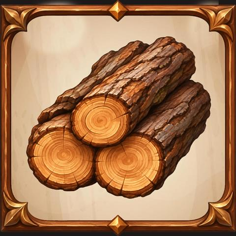
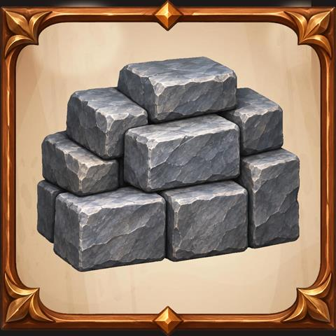
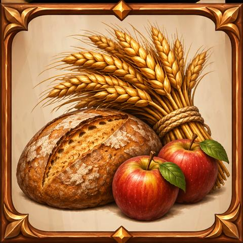
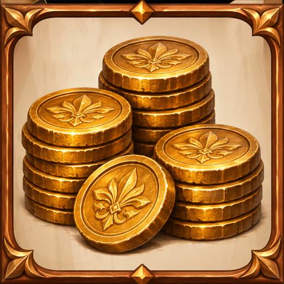
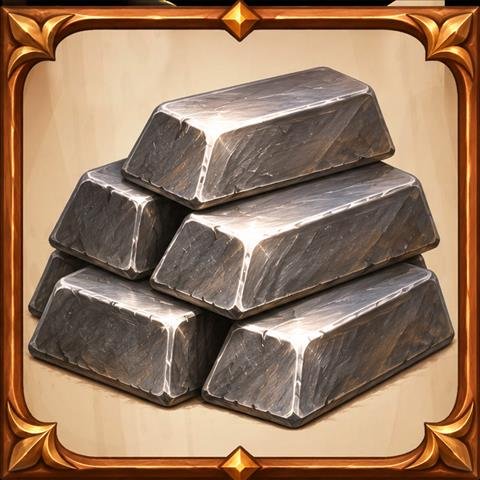

Holz
Ein gefällter Baum liefert Balken für Gerüste, Wände und Dachstühle. Mit seinem Holzvorrat schafft ein Volk Platz für neue Untertanen und Werkstätten.
Ressourcen bilden den Kern der Wirtschaft von AncientLords. Ohne Vorräte können die Völker weder Gebäude errichten noch Untertanen anheuern. Ob ein Volk seine strategischen Ziele erreichen kann, hängt davon ab, welche Vorräte es zur rechten Zeit bereitstellen kann.

Ein gefällter Baum liefert Balken für Gerüste, Wände und Dachstühle. Mit seinem Holzvorrat schafft ein Volk Platz für neue Untertanen und Werkstätten.

Steine tragen die Fundamente und Mauern einer Siedlung. Wo eine Halle oder eine Befestigung wachsen soll, braucht der nächste Bauabschnitt verlässlich Nachschub aus dem Steinlager.

Nahrung versorgt die Untertanen, während sie bauen, arbeiten oder in den Kampf ziehen. Wer weitere Untertanen anheuern möchte, muss auch ihre Versorgung einplanen.

Mit Gold kann der Ancient Lord Untertanen anheuern und Vorhaben finanzieren. Jeder ausgegebene Goldbetrag fehlt an anderer Stelle, etwa wenn für den nächsten Ausbau noch Mittel gebraucht werden.

Für die Tiefenschmiede und die Goldene Ordnung ist Metall ein eigener Werkstoff. In der Schmiede nimmt es die Form von Werkzeugen, Beschlägen oder Waffen an und ergänzt so die vier allgemeinen Ressourcen.
Für die Erforschung und das Brauen von Tränken benötigen Alchemisten besondere Zutaten. Wie sie diese kombinieren und die Wirkung eines Tranks erproben, beschreibt das Kapitel 07 – Alchemie.
Jeder Spieler startet mit 1.000 Goldmünzen. Die Schatzkammer seines Hauptgebäudes erwirtschaftet während der Partie ein passives Grundeinkommen. Dessen Höhe und Zeitabstand sind noch offen. Auf der Karte gesammelte Ressourcen stehen für Bauvorhaben zur Verfügung.
Helden können selbst Gold verdienen, wenn sie Monster oder Gegner töten oder Gebäude zerstören. Die Detailvision nennt bei Gebäuden „generische oder neutrale Gebäude“. Ob mit „generische“ gegnerische Gebäude gemeint sind, ist noch zu klären. Auch die Aufteilung der Beute bei gemeinsamen Erfolgen ist offen.
Bei jedem solchen Verkauf fließt ein Anteil des Kaufpreises in die Schatzkammer. Preise, Höhe des Anteils und Verwendung des Restbetrags sind noch offen. Wie der Erwerb eines Zaubers mit Forschung und Lernen zusammenhängt, bleibt ebenfalls zu entscheiden.